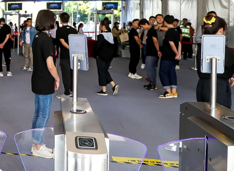
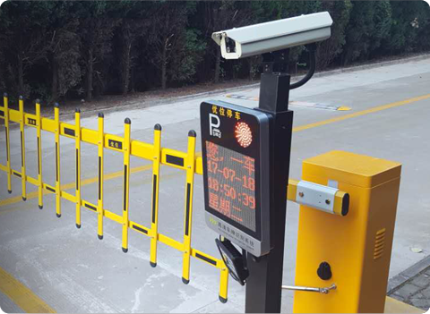

迅 速
30000人脸底库、识别时间
准 确
相似度最高可达99.99%
多模识别
3支持人脸、声纹、刷卡、密码
易集成
提供多种接口，方便集成
Agilie 智能感知终端
- UF08 人脸识别终端
- DS101人证访客一体机
- IS43 立式识别信息屏
- IS13 人脸识别信息屏
- IPC-F 人脸抓拍摄像头
- IPC-C 车牌识别摄像头
工业级设计 · 性能稳定
一款高性能、高可靠性的人脸识别产品，依托深度学习算法
产品采用防水设计，能有效防止水浸和雾潮，使得设备能在各种室外环境下正常使用。
支持人脸识别 1:1 和 1:N 模式，支持外接刷卡，身份证 阅读器。
Agile UF08 规格参数
识别准确率 99.99%，识别速度 < 1 秒
- 显示屏： 8 英寸 IPS 全视角 LCD 屏
- 操作系统： Linux
- 串行通讯接口：1 路 RS-232
- CPU： 双核 1.0T 算力
- 继电器输出：1 路开门信号输出
- 存储容量： 内存 512M，存储 8GB
- 韦根输出： 1 路韦根 26/34
- 防护等级： IP54
- 网络接口： 1 路 100M 以太网口
- 电 源： DC 12V/2A
- 刷卡接口： 1 个兼容 1443 协议 typeA/B 卡
- 工作温度： -10 ℃ ～ 50 ℃
- USB 接口： 1 路 Type-A
- 工作湿度： 10% ～ 90%
- 设备尺寸： 297.7 × 126 × 79.5（mm）
- 功 耗： Max. 24 W
适用场景
学校、社区、写字楼、酒店、商场、商店、公共服务场所等
识别速度快、准确率高
最大支持十万人脸照片库
支持抗逆光
支持活体检测
外接刷卡，身份证阅读器
支持 WiFi 功能

时尚、安全、快速
在精心的设计下，Agile多功能人脸识别终端提供了丰富的的验证模式、敏捷的识别速度，以及时尚、个性化的外观，是一款较强通用性的人脸识别终端
Agile DS101 规格参数
支持活体检测、陌生人检测、远程更新内容，支持外接打印机、二维码读头等设备 ······
- 主屏尺寸：10.1 英寸 IPS 全视角 LCD 触摸屏
- USB接口： 3路USB2.0
- 辅屏尺寸：7 英寸 IPS 全视角 LCD 触摸屏
- 识别率：识别准确率 99.9%
- 容 量：人脸容量10000张
- 速 度：识别速度 < 1 秒5
- 部署方式：公网、局域网
- 通讯接口：串型通讯接口 1路RS-232
- 网络接口：1路RJ45 100M以太网口
- 电 源： DC 12V/2A
- 功 耗： Max. 15 W
- 工作温度：- 10℃~50℃
- 工作湿度：10% - 90%
- 设备尺寸： 286 × 228.7 × 88 （mm）
适用场景
企事业单位、政府大楼、金融网点、酒店前台、车站机场、考试入职等场景
智能商业应用
一款台式双屏人证访客机，具有人证合一检测功能，精确地获取并登记来访人员的身份证信息。外形美观大气，广泛应用于高规格、高安全级别大楼的访客系统建设。
43寸高清屏幕 · 高清人脸摄像头
Agile IS43 规格参数
门禁模块 | 触摸屏 | 麦克风 | WIFI模块 | 4G模块 | 读卡器模块等·······
- 识别模式：人 脸
- 识别阈值：可 调
- 管理方式：服务端 | 客户端 跨平台访问
- 本地保存：近2个月记录（服务端不限）
- 识别距离：0.5 ~ 1.5米范围可调
- 接 口：HTTP + JSON
- 识别高度：上下净高1米
- 验证鉴权：会员授权时间范围 | 工作时间范围 | 验证模式
- 支 架：壁 挂
- 壳 体：铝型材边框+钣金烤漆
- 欢迎提示：文字（自定义） | 会员信息（备注）|订制提示音
- 尺 寸：1800 x 580 x 30（mm）
- 网络连接：WIFI | 网线RJ45
适用场景
会议签到、大厅迎宾、大门考勤
识别速度快、准确率高
多场景、广告信息发布
支持多人脸同时识别
支持功能扩展
支持网络人脸摄像头
时尚、安全、快速
在精心的设计下，Agile多功能人脸识别终端提供了丰富的的验证模式、敏捷的识别速度，以及时尚、个性化的外观，是一款较强通用性的人脸识别终端。 适用于各种室内、室外大门及通道的进出刷脸场景。

Agile IS13 规格参数
工业级设计，性能稳定，线条流畅，支持抗逆光、活体检测、陌生人检测、外接刷卡，身份证阅读器、WiFi 功能······
- 识别模式：人 脸
- 网络连接：WIFI | 网线RJ45
- 管理方式：服务端 | 客户端 跨平台访问
- 识别阈值：可 调
- 识别距离：0.5 ~ 1.5米范围可调
- 本地保存：近2个月记录（服务端不限）
- 识别高度：上下净高1米
- 接 口：HTTP + JSON
- 支 架：壁挂
- 验证鉴权：会员授权时间范围 | 工作时间范围 | 验证模式
- 欢迎提示：文字（自定义） | 会员信息（备注）| 订制提示音
适用场景
会议签到、大门考勤、小区门禁
识别速度快、准确率高
多场景信息发布
支持多人脸同时识别
支持功能扩展
支持外接门禁模块
人脸抓拍 · 无感识别
一款高速、支持变焦、自带补光的AI人脸抓拍识别摄像头
高速动态人脸捕捉、 内嵌自研AI算法、 自带双LED补光
采用IP67防水设计，轻松应对雨雪天气，室内室外都能用
Agile IPC-F 规格参数
高速动态识别，支持人脸底库配置、门禁输出控制······
- 像 素：200万
- 焦 距：8 ~ 12mm（变焦可调）
- 补 光：LED双灯芯
- 人脸底库：30000张
- 抓拍模式：人脸跟踪
- 接 口：RJ45 | 12V3A | 门禁线
- 告警模式：声音、图文
适用场景
广泛应用于企事业、学校园区等各行业人脸身份识别的刷脸门禁、考勤管理等领域
产品特点
高速动态人脸捕捉，10次抓拍/秒
最高支持同时30张人脸抓拍
自带双LED补光
支持枪机、半球外形
城市星光 · 夜视全彩
PC端、移动端、云端全方位服务与管理，支持丰富的二次开发
支持VZ智能ISP，场景自适应
少量数据训练可迭代至98%
Agile IPC-C 规格参数
高清成像、高速引擎 | 车辆信息精准识别·······
- 机 型：2MP一体机，双核900MHz处理器 + CNN硬件加速引擎(0.5Tops)
- 标配/选配：标配6mm定焦镜头；选配2.8 ~ 12mm、6 ~ 22mm、
5 ~ 50mm电动变焦镜头 - 图像传感器：1/2.8 星光级 CMOS
- USB：1路USB Type-A接口（可选配4G模组）
- 最大分辨率：1920 × 1080
- 最低照度：0.01Lux(Color)
- 识别率：抓拍率≥99.99%；识别率≥99.8%（VIR5.0算法）
- 数据输出：H265\H264\MJPEG\智能检测结构化数据输出
- 网络接口：1路10/100Mbps 自适应RJ45
- 语音对讲：支持云本地双向语音对讲，音频编码G.711/AAC
- 其他接口：IO输出：2路，IO输入：4路，RS485：1路
- ISP：支持VZ智能ISP，场景自适应
- AUDIO：1路输入（LINE&MIC）+ 1路输出（无源）
- 服 务：基础服务及云服务，支持丰富的二次开发
适用场景
适用于无植被遮挡可架设横杆路段

车身跟踪、确保识别率
综合识别率≥95%
接口丰富，助力业务拓展
内置智能补光，看得更清楚
脱机自组网，省时又省心
云端管理，降低运营成本